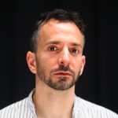

FESTIBORG: JOSHUA SOFAER (UK) - 3 dgr / SARPSBORG
- Kategori:
- Kurs og workshops
Kurs og workshops
Åpent for profesjonelle skuespillere, dvs. treårig utdanning i skuespillerkunst eller tilsvarende profesjonell erfaring. - Dato:
- 15.08.2016 til 17.08.2016
- Start kl :
- 11:00
- Slutt kl :
- 17:00
- Pris:
- 1050,-
- Adresse:
- , Sarpsborg

“Self-Sign” – the artist as material
Teknikker og inspirasjon for en skapende kunstner
Kursbeskrivelse
Hva er forskjellen fra å pusse tennene og spille at du pusser tennene? Hva er forskjellen på å gjennomføre, fremføre og å lyve?
Gjennom Joshua Sofaers både presise, absurde og konkrete oppgaver, vil du lære å bruke deg selv som utgangspunkt i ditt kunstneriske arbeid. Du vil under workshopen bli utfordret til å produsere eget scenemateriale, samtidig som du kan oppdage hvordan du kan bruke deg selv til å bli inspirert.
Workshopen vil fokusere på tre hovedtemaer: kroppen din, bakgrunnshistorien din og fantasien din, men vil også utfordre deg til å skape raskt og intuitivt.
Dette er en workshop for den som tørr å ta en utfordring, som gjerne vil lære utradisjonelle, men konkrete måter å lage scenemateriale på, som trenger en frisk pust og som vil le en hel del.
Marthe Sofie Eide, utdannet ved Akademi for Scenekunst sier: "Dette er en av de mest intense, morsomste og mest lærerike workshoper jeg har vært på i hele mitt liv. Jeg har brukt hans filosofi og oppgaver i hver eneste kunstneriske prosess jeg har vært i siden."
Påmelding
Send en mail med NAVN, CV og hvilken workshop du ønsker å delta på til workshop.festiborg@gmail.com
MERK! Ønsker du å være publikummer på resten av festivalen finnes det sterkt rabaterte kombinasjonsløsninger for workshopbillett og festivalpass. (Deltagerne på Bombina Bombast workshopen vil spille under festivalen og er som artister å regne og behøver således ikke kjøpe festivalpass)
Deltakerkrav
Workshopen er åpen for alle praktiserende utøvere, skuespillere og kunstnere som har fullført en treårig utøvende utdanning på høgskolenivå eller har tilsvarende profesjonell erfaring.
Praktisk informasjon:
Ingen forberedelser
Joshua Sofaer er en engelsk kunstner som er opptatt av det positive i verden, samarbeid og deltakelse. Dette utforsker han gjennom skulpturer, forestillinger, installasjoner og utstillinger.
Han jobber vel så gjerne i et hvitt galleri, i et operahus eller i noens private hjem.
Alle prosjektene til Sofaer bunner i et ønske om å vise frem verden som et sted fult av potensiale. Tematikk som går igjen i hans prosjekter inkluderer “søppel” - hva vi velger å kaste bort - “Samlinger” - hva vi velger å beholde - og, “Navn” - hvordan navnet vårt påvirker hvem vi blir.
FestiBorgs Workshop-program:
FestiBorg strekker seg mot å være en toneangivende møteplass for nyskapende scenekunstnere, og skaper derfor en rekke arenaer der du kan sammen med andre kunstnere kan oppdage nye metoder - arbeide, diskutere, reflektere sammen og få stimulert måten vi ser på kunsten, samfunnet og vår rolle i det hele. Vi ønsker å utfordre våre deltagere til å tenke nytt – ikke fordi man har tenkt feil tidligere, men for å utvide horisonten, og sin idé om hva teateret kan være og gjøre. Samtidig vil vi skape en atmosfære der aktørene er trygge på sine kvaliteter og har mulighet til selv å dele og lære bort.
For teaterworkshops for ungdom klikk her: http://festiborg.no/teatercamp-for-ungdom/
Overnatting
Som deltager på workshopen tilbys du å overnatte med arrangørene, og deltagerne på «Hjemmealenefest» på festivalcampen like ved festivalen i Kulåsparken. Her blir det bl.a. morgentrening og grilling og fotball på kveldene.
(Ta med telt, soveutstyr og andre campingnødvendigheter)
Morgentrening
- Åpent for alle uavhengig av workshop
For å samle folk også på tvers av de valgte workshopene vil vi starte hver dag med felles morgentrening. Morgentreningen vil fortsette gjennom hele festivalen, og vil således også bli et tilbud til publikum.
Dette er viktig for oss for å åpne opp for en fysisk tilnærming til scenekunsten, for å utvide aktørenes fysiske spekter, og fordi det finnes ingen bedre måte å starte dagen på, eller å bli kjent med nye på en gjennom ei litta dans.
Pris for NSF-medlemmer og de under 30: 850,-
I samarbeid med:


{kind=link}
{kind=link}
{kind=link}